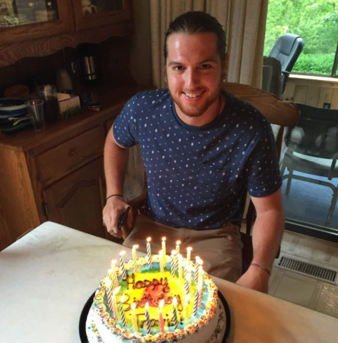
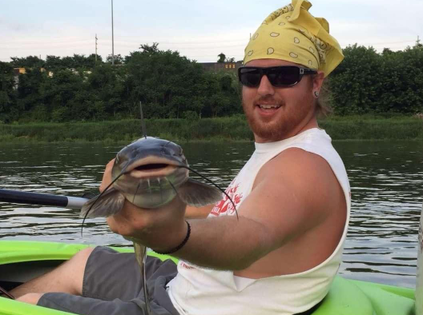

Welcome
The TPM Foundation is a 501(c)3 nonprofit organization supporting people affected by addiction with immediate help and valuable resources. We are located in Mineral County, West Virginia and serve the surrounding area.
Referral, Placement & Transportation to:
Personal & Family Assistance:
Community Awareness:
Our HOPE
The TPM Foundation's HOPE is to host neighborhood events, acquire a vehicle to facilitate transport activity and to establish a Sober Living Home.
If you would like to become a compassionate warrior in the fight against drug abuse in Our Community, please contact Allen Moreland at 301-697-1455.
The TPM Foundation holds monthly meetings, hosts presentations, distributes contact and informational literature at conferences and rallies, and donates to areas of concern in the Community.

